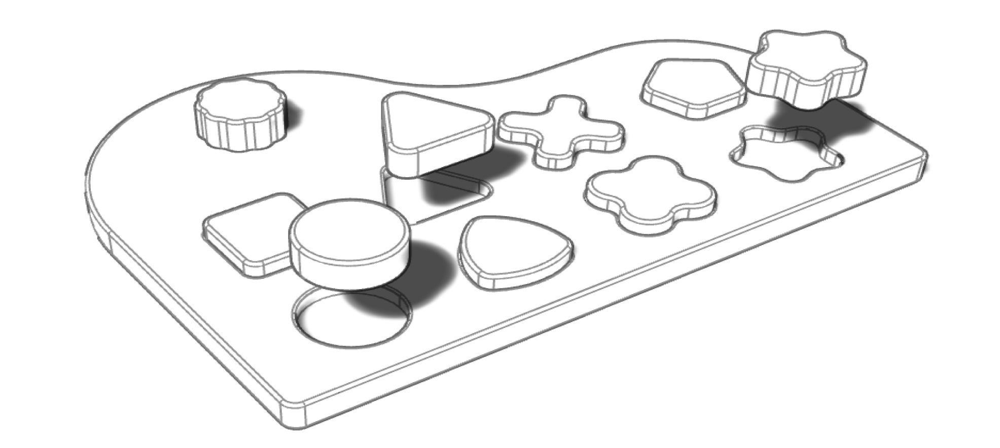

Kibo is the first interactive instrument produced by Kodaly S.r.l., entirely made of wood and covered by patent. Kibo translates musical notes in geometric shapes and helps the development of visual, tactile, auditive and mnemonic capacities, by simplifiying and accelerating the reading and playing activities.